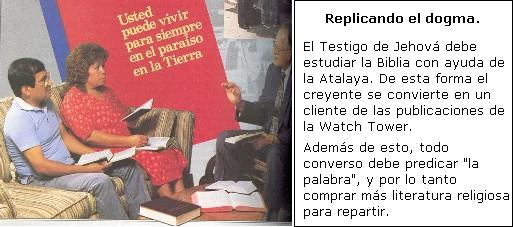

« El cuerpo dirigente | Índice | Una grey de trabajadores y vendedores sumisos »
En la congregación, formada por alrededor de 70 personas, pero que pueden rebasar las 200, 1 de abajo hacia arriba, tenemos a los Publicadores (bautizados o “simbolizados” y no bautizados), que son los que, en forma gratuita, trabajan vendiendo la literatura de la Sociedad, aunque ellos le llaman “colocarla”. 2 Estas son las personas a las que normalmente vemos tocando las puertas y haciendo proselitismo dónde y como sea y, aunque les indiquemos por favor de que ya no molesten, que ya no regresen, ellos no hacen el menor caso, violando de esa forma el artículo 16 Constitucional (de México):
“Nadie puede ser molestado en su persona, familia, domicilio, papeles o posesiones, sino en virtud de mandamiento escrito de la autoridad competente, que funde y motive la causa legal del procedimiento”.
Son uno de los fuertes pilares de la Sociedad ya que aparte de “colocar” la literatura, son los consumidores primarios de ella, debiendo de adquirir (comprar) todo lo publicado, conforme se va produciendo y, a veces, hasta en forma doble: un ejemplar de una revista para leer y subrayar y otro ejemplar del mismo título para guardado y no se maltrate. 3 Pero, por si eso fuera poco, no basta con un ejemplar para el hogar, sino uno (el mismo) multiplicado varias veces, según el número de familia en condiciones de leer. 4
Cuando “reciben” su literatura, ellos la pagan depositando el valor que se les “sugiere” (porque ahora ya “no las venden” sino que es por “cooperación”, por “donaciones voluntarias”, lista de “sugerencias” de precios por delante 5, lo que no es más que un engaño pues, cada mercancía tiene su precio mínimo, no habiendo nada gratis ni por “cooperación”; cada cosa se tiene que pagar y además al contado) en la “caja” respectiva que se encuentra en el “Salón del Reino”, inmueble donde se materializa la congregación. Sin embargo, cuando les dan literatura de más para colocada, los publicadores tienen que desembolsar de su dinero para pagarla, o dicho de otro modo, la pagan por adelantado, 6 y cuando la “coloquen” y la persona que visitan se la pague (“colabore” o “done”), éstos, que ya habían pagado, tienen de todas maneras que depositar dicho dinero nuevamente en la caja; o sea, en varias ocasiones, la literatura se paga hasta dos veces. 7 Son estas personas a las que conocemos con el nombre de “Testigos de Jehová”.
Con excepción, de la Sociedad, éstos y el resto de “testigos”, pertenecen a la “Clase Terrestre”, “La Clase del tiempo presente semejante a la hija de Jefté”; “las otras ovejas”, “la Grande Muchedumbre”, personas que “no van a ir al cielo a cogobernar con Cristo”, pero que sí “heredarán la Tierra por paraíso después del Día de la Venganza de Dios”. 8
Estas personas tienen que reunirse unas 3 ó 4 veces por semana en su “Salón del Reino”:
Una reunión es para que escuchen un “Discurso Público” y el estudio bíblico, pero a través de la revista “La Atalaya”.
La siguiente reunión se denomina “Escuela del Ministerio Teocrático”, que consiste en cómo conseguir información bíblica y “enseñarla eficazmente”.
La última reunión semanal, se llama “Reunión de Servicio”. Esta reunión es fundamental, ya que es aquí donde se les entrena mediante “demostraciones” para sortear obstáculos cuando vayan al “campo” a ofrecer su literatura.
También hay otro tipo de reunión 9, la que se da en las casas de los prospectos a TJ, y, ya que van “avanzando en conocimiento”, pero que más bien, que el responsable de dicha reunión se da cuenta que no hay algún peligro con los “amos” de la casa, se los llevan al Salón del Reino para que se integren a la cotidianeidad jehovista.
Dicho Salón del Reino es pagado y construido (fundamentalmente) por ellos mismos:
“En algunas regiones [de Polonia] los hermanos alquilan campos y los siembran para vender las cosechas, o recolectan bayas, a fin de reunir los fondos necesarios y construir con el tiempo su Salón del Reino”.
“En las zonas rurales [de Sudáfrica] donde escasea el dinero, algunos hermanos de la congregación venden parte de su ganado para comprar el cemento, otros compran los ladrillos o el techo, y así por el estilo”.
“Con los fondos que suministraron hermanos de otros países compraron los materiales necesarios, luego fabricaron sus propios bloques de hormigón y levantaron un bonito Salón del Reino que sirve de testimonio a todos en el vecindario [en Liberia]”.
“Hermanos del extranjero así como de la localidad, construyeron la sucursal [en Taiwán]. De hecho, el 50% de los publicadores locales participaron en la construcción en algún momento. Algunos viajaron hasta nueve horas de ida en autobús a fin de colaborar. De las ocho hermanas amis que ayudaron a colocar el césped en el exterior del comedor, la más joven contaba 60 años y la mayor 84. Empezaron a trabajar a las cuatro y media de la mañana. Querían comenzar a las cuatro, pero estaba muy oscuro. Estas hermanas manifiestan ese mismo celo en la predicación”. 10
Pese a todo ello, las escrituras de propiedad, según Robin de Ruiter y Antonio Carrera, pertenecen a la WT. 11
La siguiente cita, quizá señale la forma de operar de la WT, para que pueda, sin impedimento legal alguno, tener en propiedad todas los inmuebles en el mundo entero, pese a las leyes de los diversos países:
«El Editor de The Watch Tower es el Presidente de estas tres Sociedades [Nueva York y Pensilvania en EUA, e IBSA en Inglaterra]. Toda responsabilidad monetaria conectada con la obra procede de la Watch Tower Bible and Tract Society [la corporación de Pensilvania]. Todas las otras sociedades y todo ramo de la obra reciben su sostén monetario de ella…
Nuestra división de la obra se hizo necesaria por el hecho de que a la escritura de constitución de la sociedad original por el Estado de Pensilvania no se le permite por ley tener propiedades en el Estado de Nueva York; por esto existe la necesidad de organizar una sociedad subsidiaria para poder tener bienes raíces en Nueva York. De igual manera, las leyes de la Gran Bretaña impiden que una sociedad extranjera sea propietaria de bienes raíces allí. Esto hizo necesario organizar la International Bible Students Association con una escritura de constitución británica. Así sucede que algunas veces usamos un nombre y a veces otro [sic] en diferentes partes de nuestro trabajo —no obstante, todos de hecho significan la Watch Tower Bible and Tract Society [la corporación de Pensilvania]a la cual deberían hacerse todas las donaciones.
¿Son esas tres las únicas corporaciones…?
No, desde entonces la Sociedad ha formado varias corporaciones en diferentes países del mundo, pero todas trabajan bajo la dirección de la corporación de Pensilvania, la cual es, en sí misma, solamente un instrumento jurídico [sic] para el cuerpo no incorporado de los testigos de Jehová en todo el mundo”.» 12
¿Cómo se encuentran escriturados dichos “Salones del Reino” y demás propiedades en nuestro país, y qué relación se tendrá con la “editorial” llamada “Grupo Editorial Ultramar, S.A. de C.V.”?
Fuente de la ilustración
Adoctrinando en el hogar. “Los Testigos de Jehová, proclamadores del Reino de Dios”; Watch Tower Bible and Tract Society of Pennsylvania; 1993; Grupo Editorial Ultramar, S.A. de C.V.; p. 554.
Bibliografía
- 1
-
Franz, Frederick; “Los Testigos de Jehová en el Siglo XX”; Watch Tower Bible and Tract Society of Pennsylvania; 1979/1990; Grupo Editorial Ultramar, S.A. de C.V.; p. 25.
- 2
-
*Carrera, Antonio; “Los falsos manejos de los Testigos de Jehová”; Editorial El Camino; 1985/1992; p. 126. “Los Testigos de Jehová en el Propósito Divino”; Watch Tower Bible and Tract Society of New York, Inc.; 1965; pp. 80-98.
- 3
-
Gagnon, Daniel; comunicación personal.
- 4
-
*Ruiter, Robin de; “íPrecaución! Testigos de Jehová”; Editorial El Camino; 1992; p. 43.
- 5
-
Ver “LISTA DE DONACIONES SUGERIDAS” en la sección de Anexos. Este Anexo no se incluyó en el escrito original pero sí se discutió ampliamente con el destinatario del presente documento. Actualmente, la lista no se emplea expresamente pero sí tácitamente.
- 6
-
*Ruiter, Robin de; “íPrecaución! Testigos de Jehová”; Editorial El Camino; 1992; p. 43.
- 7
-
Ibídem; p. 347.
- 8
-
“La Verdad os hará libres”; Watchtower Bible and Tract Society, Inc.; 1943; pp. 321-323.
- 9
-
Franz, Frederick; “Los Testigos de Jehová efectúan unidamente la voluntad de Dios por todo el mundo”; Watch Tower Bible and Tract Society of Pennsylvania; 1971/1991; Grupo Editorial Ultramar, S.A. de C.V.; pp. 14-15.
- 10
-
“Anuario”; 1996; pp. 25, 27.
- 11
-
*Ruiter, Robin de; “íPrecaución! Testigos de Jehová”; Editorial El Camino; 1992; p. 347. *Carrera, Antonio; “Los falsos manejos de los Testigos de Jehová”; Editorial El Camino; 1985/1992; p. 139.
- 12
-
“Los Testigos de Jehová en el Propósito Divino”; Watch Tower Bible and Tract Society of New York, Inc.; 1965; p. 50.
« El cuerpo dirigente | Índice | Una grey de trabajadores y vendedores sumisos »
Comentarios
Comments powered by Disqus